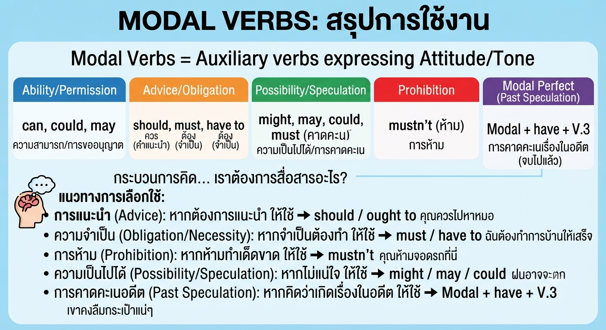

Modal Verbs เป็นกริยาช่วยที่แสดง "ทัศนคติ" หรือ "น้ำหนัก" ของประโยค โดยในระดับชั้น ม.5 ผู้เรียนต้องสามารถแยกแยะความแตกต่างระหว่างความสามารถ (Ability), การแนะนำ (Advice), ความจำเป็น (Obligation), การคาดคะเน (Speculation), และข้อห้าม (Prohibition) ได้อย่างแม่นยำ

1. วิเคราะห์กาลเวลา: หากเป็นเรื่องราวในอดีตที่จบไปแล้ว ต้องใช้โครงสร้าง Modal + have + V.3 เสมอ (เช่น must have gone) ห้ามใช้เพียงแค่ Modal + V.inf
2. วัดระดับความมั่นใจ: หากคาดคะเนด้วยความมั่นใจมากให้ใช้ must, หากไม่แน่ใจให้ใช้ may/might/could
3. คัดกรองตัวเลือก (Anti-Guessing): อ่านตัวเลือกทุกข้อเพื่อดูความสอดคล้องกับบริบท หลีกเลี่ยงการตัดตัวเลือกที่ผิดหลักไวยากรณ์ก่อนเสมอ
เขียนโดย พระจอมเกล้าติวเตอร์